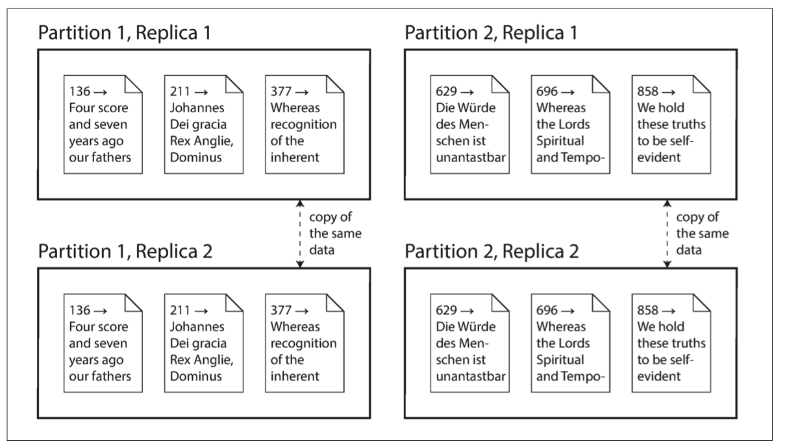

第一章 基础概念
一般情况下系统需要具有的能力以及对应依赖 1. 数据存储 对应 数据库 2. 记录昂贵的查询操作 对应 缓存 3. 允许用户通过关键字进行搜索 对应 搜索引擎 4. 给其他系统发消息进行异步处理 对应 流式计算框架 (其实也涉及到消息队列) 5. 定时处理大量数据 对应 批处理框架
一个数据密集型系统，可能包括数据库，缓存，搜索引擎，消息队列，同时需要数据变更时需要保持同步
本书对几个特征的定义 1. Reliability 系统需要有一定的容错能力 2. Scalability 随着数据量或者流量的增长 要有对应的方案去应对增长 3. Maintainability 可持续迭代
Reliability
硬件故障
- 冗余存储
- 多节点部署，分布式应用
软件故障
特点是可能带来连锁反应
人为故障
解法有 1. 沙箱环境 2. 从单元测试到集成测试再到人工测试 3. 代码或者配置的回滚能力 4. 应用监控
Scalability
考虑负载和性能之间的关系
大多数情况下响应时间不是一个固定的值，而是数值的分布
一般来看服务端平均响应时间并不是唯一的评价标准，更好的做法有50分位点，95分位点，99分位点，99.9分位点等(p50 p95 p99 p999)
SLA (service level agreement)
提高性能的方案一般有 1. 提高机器的性能，相当于垂直扩展 2. 增加机器数目，相当于水平扩展
水平扩展又分为人为水平扩展和自动扩展(插一句题外话，serverless和自动水平扩展非常类似) 对于有状态的服务水平扩展需要保证状态一致性，这会带来额外的复杂度。
Maintainability
保持系统可持续迭代的建议 1. 保证系统能平稳运行 2. 保持系统较容易理解，特别是对于新加入的工程师能快速上手 3. 系统延展性好，可以快速适应需求的变化
第二章 数据模型和查询语言
关系型数据模型 Mysql，Oracle 对象型数据模型 MongoDB，ElasticSearch
关系型数据存储，需要通过多次join(无论是通过sql还是应用层代码)才能将数据模型(model)转换成对象(object) 对象型数据存储，很难处理多对多的关系
关系型存储和对象型存储对于多对多问题的解决方案没有区别 关系型存储使用外键 对象型存储使用对象引用
如果应用中的数据模型绝大多数是一对多的关系，几乎没有多对多关系，那么使用对象型存储是一个不错的选择
如果应用中的数据模型存在大量多对多关系，更倾向使用关系型存储，并且有一些反范式的方案可以减少join，代价是增加保持数据一致性的复杂度
关系型数据库一般结构化较强，而对象型数据库结构较灵活
关系型数据库和对象型数据库有趋同的趋势(感觉elastic search是集大成者)
以SQL为代表的声明式语言可以屏蔽掉底层的技术细节，在代码不变的情况下通过新增索引就可以提高性能，甚至在大数据组件兴起的当下，Spark SQL，Flink SQL都可以在底层使用多核并行处理的技术来提升性能
一个css和js实现同样功能的例子 页面结构
<ul>
<li class="selected">
<p>Sharks</p>
<ul>
<li>Great White Shark</li>
<li>Tiger Shark</li>
<li>Hammerhead Shark</li>
</ul>
</li>
<li>
<p>Whales</p>
<ul>
<li>Blue Whale</li>
<li>Humpback Whale</li>
<li>Fin Whale</li>
</ul>
</li>
</ul>
需要实现的功能是选中的li背景变为蓝色 css的做法
li.selected > p {
background-color: blue;
}
js的做法
var liElements = document.getElementsByTagName("li");
for (var i = 0; i < liElements.length; i++) {
if (liElements[i].className === "selected") {
var children = liElements[i].childNodes;
for (var j = 0; j < children.length; j++) {
var child = children[j];
if (child.nodeType === Node.ELEMENT_NODE && child.tagName === "P") {
child.setAttribute("style", "background-color: blue");
}
}
}
}
图类型的数据存储
第三章 存储和检索
数据库的索引的思想是使用额外的空间来增加查询速度，带来额外的开销有 1. 额外的存储上 2. 数据更新时需要维护索引
第四章 编码和演进
第五章 复制
复制与分片的区别 复制: 在不同的节点存储相同的数据 分片: 将完成的数据分为多个部分存储在不同的节点  上图的数据有两套完成的数据，同时又进行了分片
ElasticSearch好像使用的这种结构
数据复制的优势 1. 数据存储在地理位置上离用户更近，可以降低数据延迟 2. 即使一个副本挂了，系统也能保持工作 3. 读写分离，读走副本的方式可以增加读的吞吐量
主从复制
主要面对的问题是主从数据的一致性
主从复制的处理过程 1. 主节点执行写操作，从节点监听主节点的日志完成相同操作 2. 读操作在主从节点都可以执行
同步复制可以保证数据的一致性，缺点是每次写入操作在所有从节点返回响应前必须block住，因此在大多数情况下，只有一台从节点保持同步复制，其他的服务器进行异步复制，这种方式也被称为半同步复制。
主从复制情况下高可用的设计思路 如果从节点挂了，可以使用位点追赶的方式执行 如果主节点挂了，需要把一个从节点提升为主节点，这个过程称为故障转移(failover)
自动化的故障转移需要以下几个步骤 1. 心跳机制用于决定是否出现故障 2. 选举一个新的主节点 3. 变更所有的读写配置
复制日志的选取 1. WAL 物理日志，和存储引擎有关，例如mysql innodb的 redo log，记录了磁盘的操作 2. 逻辑日志，和存储引擎无关，例如mysql的bin log，记录的是sql本身的操作
复制延迟问题
主从复制对于读多写少的场景可以极大增加吞吐量 对于异步主从复制策略，存在的问题是同时读主节点和从节点获取的数据可能不同，只能保证最终一致